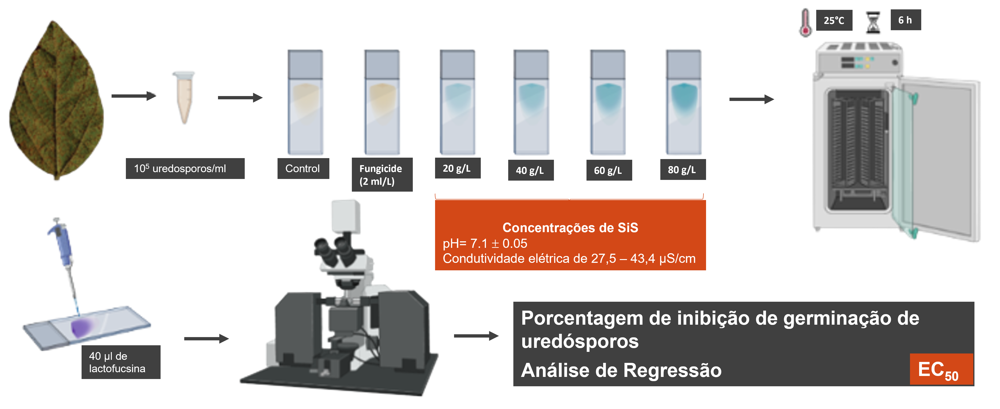
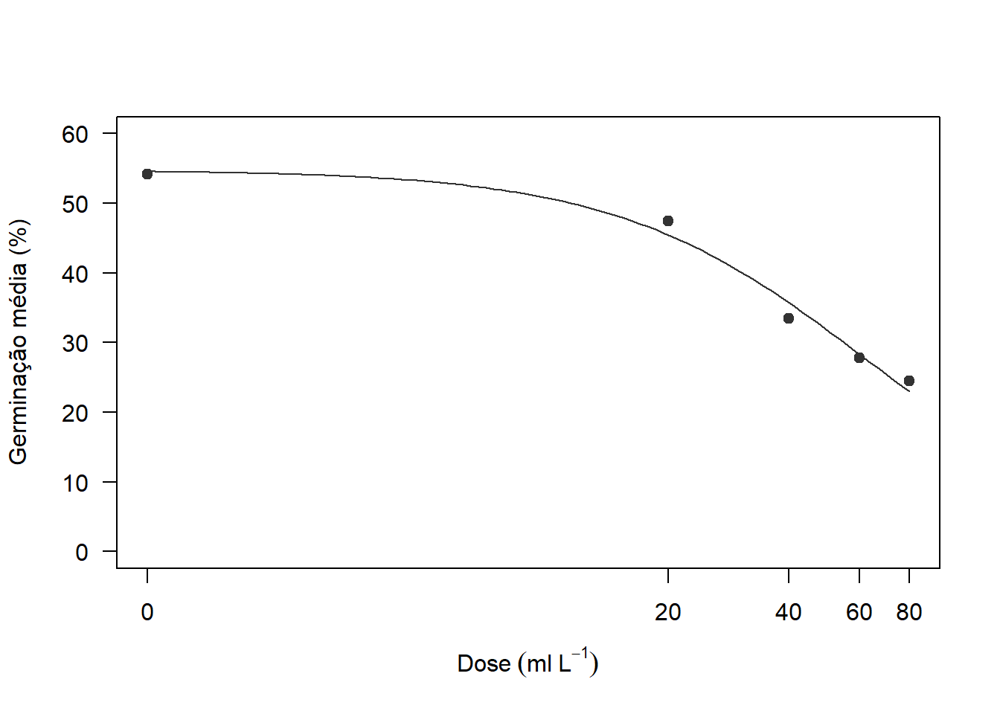

Teste in vitro
Avaliação da inibição de germinação de uredósporos de Phakopsora pachyrhizi submetidos a concentrações crescentes de SiS.
Carregamento dos pacotes
library(knitr)
library(ggplot2)
library(gsheet)
library(ggthemes)
library(tidyverse)
library(drc)
library(kableExtra)
library(DT)Importação os dados - Germinação de Uredósporos (GU)
Os dados utilizados nesta análise serão importados de uma planilha google sheet. Após importação, algumas colunas de dados serão transformados para fatores. O intuito é facilitar o desenvolvimento das análises
GU <- gsheet2tbl("https://docs.google.com/spreadsheets/d/1t1oOnimLXdx6rqtDiYg6wNXB2byY8_Z-/edit?gid=949032025#gid=949032025")
GU <- GU %>%
mutate(REPETICAO = as.factor(REPETICAO))
head(GU)# A tibble: 6 × 4
DOSE REPETICAO TAXA_DE_INIBIÇÃO_DE_GERMINAÇÃO TAXA_DE_GERMINAÇÃO
<dbl> <fct> <dbl> <dbl>
1 0 1 0 60.6
2 0 2 0 47.7
3 0 3 0 51.4
4 0 4 0 57.1
5 20 1 13.4 46.9
6 20 2 12.5 47.4Cálculo da Germinação Média
GU2 <- GU %>%
group_by(DOSE) %>%
summarise(mean_germ = mean(TAXA_DE_GERMINAÇÃO)) %>%
dplyr::mutate(inib = ((54.1900-mean_germ)/54.1900)*100) %>%
round(digits = 2)
head(GU2)# A tibble: 5 × 3
DOSE mean_germ inib
<dbl> <dbl> <dbl>
1 0 54.2 0
2 20 47.5 12.4
3 40 33.5 38.2
4 60 27.8 48.7
5 80 24.4 54.9Modelagem da EC50 (modelo não-linear)
Para calcular a dose do produto que é capaz de inibir 50% da germinação dos uredósporos do patógeno faremos uso da função drm (pacote drc) modelando para em Log-logistico com 3 parâmetros.
EC <- drm(mean_germ ~ DOSE,
data = GU2,
fct = LL.3())
summary(EC)
Model fitted: Log-logistic (ED50 as parameter) with lower limit at 0 (3 parms)
Parameter estimates:
Estimate Std. Error t-value p-value
b:(Intercept) 1.38173 0.25508 5.4169 0.03243 *
d:(Intercept) 54.73723 2.36389 23.1556 0.00186 **
e:(Intercept) 63.15475 6.62324 9.5353 0.01082 *
---
Signif. codes: 0 '***' 0.001 '**' 0.01 '*' 0.05 '.' 0.1 ' ' 1
Residual standard error:
2.455321 (2 degrees of freedom)EC
A 'drc' model.
Call:
drm(formula = mean_germ ~ DOSE, data = GU2, fct = LL.3())
Coefficients:
b:(Intercept) d:(Intercept) e:(Intercept)
1.382 54.737 63.155 AIC(EC)[1] 26.59051Cálculo da EC50
ED(EC, 50, interval = "delta")
Estimated effective doses
Estimate Std. Error Lower Upper
e:1:50 63.1548 6.6232 34.6573 91.6522Com base no modelo gerado anteriormente e na função ED, foi possível estimar que a dose do produto suficiente para inibir 50% da inibição dos uredósporos é de 63,15.
Tabela de Resultados
colnames(GU2) = c('Dose', "Germinação Média (%)", "Inibição da Germinação (%)")
kable(GU2,
align = "ccc")| Dose | Germinação Média (%) | Inibição da Germinação (%) |
|---|---|---|
| 0 | 54.19 | 0.00 |
| 20 | 47.48 | 12.38 |
| 40 | 33.46 | 38.25 |
| 60 | 27.80 | 48.69 |
| 80 | 24.43 | 54.92 |
Gráfico de Dose ✕ Germinação
plot(EC,
xlab = Dose~(ml~L^-1),
ylab = "Germinação média (%)",
xt = c("0", "20", "40", "60", "80"),
ylim = c(0,60),
pch = 19,
col = "grey20")